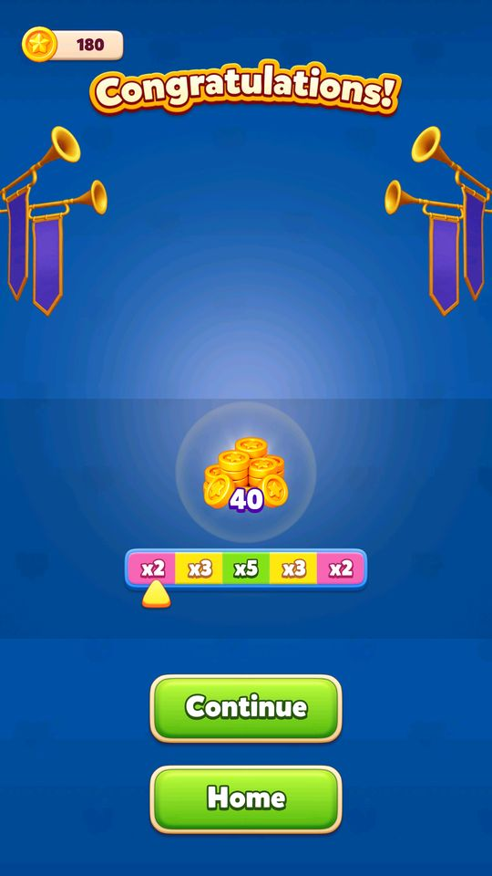
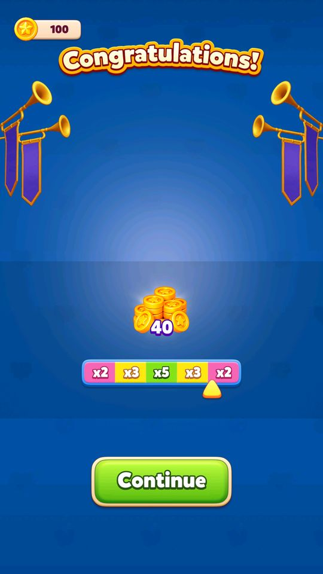

Thắng level & thưởng
Khi hạt cát cuối cùng của tranh được hút (SandPainting::isSandsClear: số hạt còn < 1 — xe còn trên bàn không ảnh hưởng), sao bay vào thanh sao, màn «胜利反馈» (logo, ruy…
Mô tả
- Khi hạt cát cuối cùng của tranh được hút (SandPainting::isSandsClear: số hạt còn < 1 — xe còn trên bàn không ảnh hưởng), sao bay vào thanh sao, màn «胜利反馈» (logo, ruy băng, pháo hoa) hiện rồi tới trang kết quả: số level, coin thưởng, sao, thời gian chơi, thanh rương 5 level và các nút nhận thường / nhận nhân hệ số bằng quảng cáo / về Home.
- Coin thưởng theo hard type: 20 (thường), 60 (khó), 100 (siêu khó) — nhưng FlowerCoreGame::getLevelDifficulty luôn trả 0 (disasm: mov w0, wzr; ret) → hard type 1 → thực tế luôn
 20 coin.
20 coin. - Sau khi nhận, game hoặc về Home (để bay vật phẩm sự kiện, mời đánh giá) hoặc vào thẳng level sau tuỳ chuỗi AB getHowToEnterNextLevel.
- Thiết kế đặt quảng cáo nhân thưởng ngay sau khoảnh khắc thắng, và gắn tiến độ «rương 5 level» để tạo lý do chơi tiếp.
Thiết kế chi tiết
20 coin, nút nhân hệ số bằng QC, rương mỗi 5 level, AB chọn về Home hay chơi tiếpTóm tắt thiết kế
Code Thắng = hạt cát cuối cùng biến mất (SandPainting::isSandsClear: còn < 1 hạt); xe còn trên bàn không quan trọng. Không có chấm điểm theo số bước — used_steps chỉ gửi analytics.
Code Khách cuối lên xe → sao bay từ điểm ngẫu nhiên → màn «胜利反馈» (logo, ruy băng, pháo hoa) → trang kết quả: level, coin, sao, thời gian chơi, thanh rương mỗi 5 level (mốc (level/5)·5+5, tiến độ (level−1) mod 5).
Code Coin gốc theo hard type: 20 / 60 / 100 (thường / khó / siêu khó). Lõi Bus luôn báo độ khó 0 (getLevelDifficulty = mov w0, wzr) nên thực tế luôn là 20 coin/màn. Nút nhân: coin × hệ số từ thanh trượt 4 đoạn (1_2 … 4_5) đổi bằng QC.
Code Sau khi nhận: lần đầu từ level 15, sau đó mỗi ≥ 14 level, game về Home để mời đánh giá; còn lại chuỗi AB getHowToEnterNextLevel chọn «直接进入下一关» (vào thẳng), «20关后直接进入下一关», «有活动奖励物返回» (về Home khi có vật phẩm sự kiện) hoặc «返回主界面».
Live 13/11 Nhóm AB 90 (máy snapshot): page type 2 (trang kết hợp phản hồi + thưởng), không nằm trong danh sách bật nút QC trên trang thắng (suy luận: chỉ nút nhận thường).
Luồng người chơi từng bước
- Sao bayClientCode
onGameOver→ thu phần tử loại 2 tại (rand()%900+10, rand()%1200+300) →createStarCollectAni. - Phản hồi thắngGiao diệnCodeAPK
createSuccFeedback: page type ≠ 2/3 thì layout «胜利反馈» riêng; type 2/3 dùng trang «结合胜利反馈». Có nút bỏ qua toàn màn. - Trang kết quảGiao diệnCodeAPKLevel, coin, sao, thời gian (convTimeToStr), thanh «累计胜利宝箱» 0–4/5, thanh hệ số, nút «Collect x» (thường) / «Get x» (nhân hệ số) / «Continue» / «Home»; mốc rương ghi «Reach Level #!1»; thanh coin + mạng ở trên.

Trang thắng level 3: 40 coin + thanh hệ số x2/x3/x5, thêm nút Home dưới Continue (level 1–2 chỉ có Continue) (playtest 15/11, level 3) - Nhận thườngNgười chơiCode
_onClickHomeButton: coin bay vào ví, 1 s sau rời trang. Có thể chèn QC xen kẽ nếu level > ngưỡng và chưa mua bỏ QC. - Nhận nhân hệ sốNgười chơiCode
_onClickDoubleButton: coin = gốc × hệ số; xem QC quashowCollectDoubleCoinAD; không có QC → «No ads available».
Trang thắng «Congratulations!»: 40 coin (gốc ×2 tại vị trí kim) với thanh hệ số chạy qua lại x2/x3/x5/x3/x2 và một nút Continue — không thấy sao/thời gian/rương 5 level (playtest 15/11, level 1) - Mời đánh giáClientCode
_willPopRateViewtheoUserDefault_RatedStarLastPopLevel: level > 14 lần đầu, sau đó cách ≥ 14 level → về Home. - Đi tiếpClientCodeTheo AB: vào thẳng level sau (task mạng + chuỗi thắng) hoặc về Home để bay vật phẩm sự kiện / đánh giá.
- Sự kiện cộng điểmClientCode
m8GameAdapter::onGameSucceedbáo IActvityFeature;showRewardCollectAnibay vật phẩm.


Coin thắng màn (code)
| Hard type | Nhãn | Coin gốc | Thực tế 41.0 |
|---|---|---|---|
| 1 | Normal | 20 | mọi level (suy luận) |
| 2 | Hard | 60 | — |
| 3 | Super Hard | 100 | — |
Code m8GameSucceedAdapter::getCollectCoins; hard type = map {0:1,1:2,2:3}[FlowerCoreGame::getLevelDifficulty() = 0].
Đi đâu sau trang thắng
| Điều kiện | Kết quả |
|---|---|
| Tới lượt mời đánh giá (level > 14, rồi mỗi ≥ 14 level) | Về Home |
| AB «直接进入下一关» | Vào thẳng level sau |
| AB «20关后直接进入下一关» | Vào thẳng từ level 20 (suy luận theo tên) |
| AB «有活动奖励物返回» | Về Home nếu có vật phẩm sự kiện (setHasReward) |
| AB «返回主界面» / mặc định | Về Home |
| Level < getTutorialLevelNum (1 ở nhóm 90; 4 ở vài nhóm) | Bỏ trang thắng, vào thẳng |
Code m8GameSucceedAdapter::onFinished / onDidSucceed; RedABTest.
Rương 5 level trên trang thắng
| Level vừa thắng | Tiến độ (level−1) mod 5 | Mốc rương |
|---|---|---|
| 1 | 0 | 5 |
| 3 | 2 | 5 |
| 5 | 4 | 10 |
| 6 | 0 | 10 |
| 12 | 1 | 15 |
Code SucceedSystem::createSuccGetReward. Quà của rương chưa thấy trong code (gap).
Vận dụng cho game khác
- Đặt QC nhân thưởng ngay sau khoảnh khắc thắng, với thanh trượt hệ số chạy qua lại: người chơi «canh» hệ số cao là đã cam kết xem QC.
- Cho AB quyết định về Home hay vào thẳng level sau: vào thẳng tăng số màn/phiên; về Home tăng tiếp xúc với sự kiện/shop. Jam Bus còn có lựa chọn lai «chỉ về Home khi có vật phẩm sự kiện cần bay».
- Hiện tiến độ «rương mỗi 5 level» trên trang thắng để luôn có một mục tiêu gần.
- Mời đánh giá chỉ sau ≥ 15 level và cách nhau ≥ 14 level, tại Home, sau một trận thắng.
- Nhận định Rủi ro: coin thắng cố định 20 vì độ khó không truyền lên khung; nếu muốn thưởng theo độ khó, phải nối LevelDifficulty vào
getLevelDifficulty.
Ảnh cần chụp (4) — 2 ảnh đã gắn
Chụp vào screens/deep_1113/LevelWin/ rồi ghi tên file vào flow[].shots.
- Phản hồi thắng: Màn phản hồi thắng (logo, pháo hoa)
- Trang kết quả: Trang kết quả: coin, sao, thời gian, thanh rương 5 level, nút nhận
- Nhận nhân hệ số: Nút nhận nhân hệ số với thanh trượt (nếu nhóm bật QC)
- Mời đánh giá: Popup đánh giá ở Home sau level 15
Bảng tổng hợp mọi tính năng đã làm chi tiết: JamBus_ThietKeChiTiet.xlsx.
Mở khóa & điểm vào
Có từ level 1. Màn phản hồi thắng chỉ chạy khi level ≥ RedABTest::getTutorialLevelNum (1 với nhóm AB 90; một số nhóm 4) — dưới mức đó m8GameSucceedAdapter::onDidSucceed vào thẳng level sau.
Điểm vào:
- Tự động sau khi thắng (m8GameControl::onSucceed → m8GameSucceedAdapter::onSucceed)
Cách hoạt động
- Lõi Bus thắng → BQGameDelegateImpl::onGameOver bay sao từ vị trí ngẫu nhiên rồi m8GameProtocol::succeedGame. m8GameControl::onSucceed gọi m8GameSucceedAdapter::onSucceed: nếu level ≥ getTutorialLevelNum thì SucceedSystem::createSuccFeedback (lưu level vào +0x314; nhóm có getSucceedPageType ≠ 2 và ≠ 3 thì chạy layout «OSG_成功模块_界面_胜利反馈» riêng, type 2/3 dùng trang kết hợp).
- Adapter lưu tham số kết thúc ván (sao, thời gian, cờ có thưởng). m8GameNotify::onDidSucceed → m8GameStatusAdapter::onDidSucceed tăng level; m8GameSucceedAdapter::onDidSucceed (level < tutorial thì loadingBeforeStartGame(true)).
- SucceedSystem::createSuccGetReward dựng trang: level, level+1, mốc rương = (level/5)·5+5, tiến độ (level−1) mod 5, thời gian chơi (convTimeToStr), các giá trị thưởng; với page type 2 đặt P-是否启用广告获取按钮 theo RedABTest::isSucceedPageADEnable.
- Thanh tài nguyên (createResBar) hiện coin + mạng.
- Nút thường (_onClickHomeButton): coin = gốc × hệ số thường, bay coin (createCoinFlyAni) và đếm (createCoinCollectAni), sau 1 s «_移除当前场景».
- Nút nhân (_onClickDoubleButton): coin = gốc (+0x300) × hệ số từ thanh trượt (delegate +0x28), xem QC qua showCollectDoubleCoinAD.
- Kết thúc gọi m8GameSucceedAdapter::onFinished: _settleSucceedData chốt sao/vật phẩm; nếu tới lượt mời đánh giá (UserDefault_RatedStarLastPopLevel) thì về Home; ngược lại theo chuỗi getHowToEnterNextLevel («直接进入下一关», «20关后直接进入下一关», «有活动奖励物返回», mặc định về Home). m8GameAdapter::onGameSucceed/onSucceedModuleSettled báo IActvityFeature để sự kiện cộng điểm.
Phần thưởng
Phần thưởng (theo GDD)
| Ngữ cảnh | Phần thưởng | Bằng chứng |
|---|---|---|
| Thắng level | 20 CCoin (hard 1) / 60 CCoin / 100 CCoin; ×hệ số nếu xem QC | m8GameSucceedAdapter::getCollectCoins; SucceedSystem::_onClickDoubleButton |
| Sao | Sao thu trong ván (getStarCounts) | m8GameSucceedAdapter::getStarCounts |
Số liệu chính
| Chỉ số | Giá trị | Nguồn |
|---|---|---|
| Trễ trước khi rời trang sau khi nhận | 1.0 s | leave delay · code const |
| Kiểu trang thắng | 0–3; nhóm 90 = 2 | RedABTest::getSucceedPageType · AB test |
Use case (12)
Bấm vào từng use case để mở. Mở/đóng tất cả
UC-01 Sao bay khi thắng
Các bước- Vị trí ngẫu nhiên (rand()%900+10, rand()%1200+300)
- Core delegate thu phần tử loại 2 (sao) → m8GameBoardTemplate::gotOneElement → m8GameProtocol::collect
- SucceedSystem::createStarCollectAni (P-飞行星星数, điểm đầu/cuối)
| Actor | System |
|---|---|
| Trigger | BQGameDelegateImpl::onGameOver(thắng) |
| Điều kiện | — |
| Kết quả | Sao bay vào thanh sao |
| Evidence | BusQueue::BQGameDelegateImpl::onGameOver; m8::m8GameBoardTemplate::gotOneElement; m8::m8GameProtocol::collect; SucceedSystem::createStarCollectAni |
UC-02 Màn phản hồi thắng
Các bước- SucceedSystem::createSuccFeedback: đặt +0x314 = level
- RedABTest::getSucceedPageType ≠ 2 và ≠ 3 → layout «OSG_成功模块_界面_胜利反馈» (logo, 上方飘带, 喇叭, 礼花) chạy «胜利反馈进入»
- Type 2/3 → trang kết quả kết hợp (layout «…_结合胜利反馈» / «…_包含返回主页»)
| Actor | System |
|---|---|
| Trigger | m8GameSucceedAdapter::onSucceed |
| Điều kiện | level ≥ getTutorialLevelNum |
| Kết quả | Hoạt ảnh thắng; có nút bỏ qua toàn màn (全屏跳过按钮) |
| Quy tắc / số liệu | Nhóm AB 90 (live): page type 2 |
| Evidence | m8::m8GameSucceedAdapter::onSucceed; SucceedSystem::createSuccFeedback; RedABTest::getSucceedPageType |
UC-03 Trang kết quả
Các bước- SucceedSystem::createSuccGetReward: P-关卡数 = level, P-目标关卡数 = (level/5)·5+5, tiến độ (level−1) mod 5, thời gian (convTimeToStr), 4 giá trị thưởng (+0x18…+0x24)
- Page type 2: P-是否启用广告获取按钮 = RedABTest::isSucceedPageADEnable
- SucceedSystem::createResBar (coin, mạng)
| Actor | System |
|---|---|
| Trigger | Sau phản hồi thắng |
| Điều kiện | — |
| Kết quả | Trang có level, thanh rương 5 level, coin, sao, thời gian, nút nhận |
| Quy tắc / số liệu | Nhóm 90 không nằm trong danh sách isSucceedPageADEnable (66 nhóm) → nút QC tắt (suy luận) |
| Evidence | SucceedSystem::createSuccGetReward; SucceedSystem::_getProcessNowByLevel; SucceedSystem::convTimeToStr; SucceedSystem::createResBar; RedABTest::isSucceedPageADEnable |
UC-04 Coin thưởng theo độ khó
Các bước- m8GameSucceedAdapter::getCollectCoins: hard type 3 → 100; 2 → 60; khác → 20
- Hard type = m8GameBoardTemplate::getHardType (map {0:1,1:2,2:3} theo FlowerCoreGame::getLevelDifficulty = 0)
| Actor | System |
|---|---|
| Trigger | Tính thưởng |
| Điều kiện | — |
| Kết quả | 20 coin mỗi màn thắng trong bản 41.0 (suy luận) |
| Evidence | m8::m8GameSucceedAdapter::getCollectCoins; m8::m8GameBoardTemplate::getHardType; FlowerCoreGame::getLevelDifficulty |
UC-05 Nhận thường
Các bước- SucceedSystem::_onClickHomeButton: +0x320 = 0, coin = gốc × hệ số
- Page type 2 và không có QC: createCoinFlyAni rồi createCoinCollectAni
- m8GameSucceedAdapter::showCollectNormalCoinAD: level ≤ ngưỡng (+0x54) hoặc đã bỏ QC thì không chèn QC
- scheduleOnce 1 s «_移除当前场景»
| Actor | Player |
|---|---|
| Trigger | Nút nhận / Continue |
| Điều kiện | Chưa bấm nút nào (+0x318 = 0) |
| Kết quả | Coin cộng vào ví; chuyển cảnh |
| Evidence | SucceedSystem::_onClickHomeButton; SucceedSystem::createCoinFlyAni; SucceedSystem::createCoinCollectAni; m8::m8GameSucceedAdapter::showCollectNormalCoinAD |
UC-06 Nhận nhân hệ số bằng quảng cáo
Các bước- m8GameSucceedAdapter::showCollectDoubleCoinAD
- SucceedSystem::_onClickDoubleButton: +0x320 = 1; coin = gốc (+0x300) × hệ số (delegate +0x28, thanh trượt «倍数滑动条»)
- createCoinCollectAni; 1 s sau rời trang
| Actor | Player |
|---|---|
| Trigger | Nút «获取 x» có biểu tượng QC |
| Điều kiện | Có QC (isHaveDoubleCoinAD) |
| Kết quả | Coin × hệ số |
| Quy tắc / số liệu | Thanh trượt có 4 đoạn 1_2, 2_3, 3_4, 4_5 (suy luận ×2…×5); không có QC → «No ads available» (createNotify) |
| Evidence | m8::m8GameSucceedAdapter::showCollectDoubleCoinAD; SucceedSystem::_onClickDoubleButton; SucceedSystem::createNotify; m8::m8GameSucceedAdapter::isHaveDoubleCoinAD |
UC-07 Chốt dữ liệu và mời đánh giá
Các bước- _settleSucceedData: đọc số phần tử thu (getElemNums), lưu sao/cờ thưởng
- _willPopRateView: UserDefault_RatedStarLastPopLevel = 0 và level > 14 → mời; hoặc đã từng mời và level − mốc ≥ 14
- Có mời → loadingBeforeQuitGame (về Home, popup đánh giá hiện ở Home)
| Actor | System |
|---|---|
| Trigger | m8GameSucceedAdapter::onFinished |
| Điều kiện | — |
| Kết quả | Về Home để mời đánh giá |
| Quy tắc / số liệu | Lần đầu từ level 15 (suy luận từ điều kiện > 14) |
| Evidence | m8::m8GameSucceedAdapter::onFinished; m8::m8GameSucceedAdapter::_settleSucceedData; m8::m8GameSucceedAdapter::_willPopRateView |
UC-08 Về Home hay vào thẳng level sau
Các bước- RedABTest::getHowToEnterNextLevel trả một trong: «直接进入下一关», «20关后直接进入下一关», «有活动奖励物返回», «返回主界面»
- «有活动奖励物返回»: về Home nếu có vật phẩm sự kiện cần bay (cờ setHasReward +0xb8)
- Vào thẳng: m8GameNotify::onAfterSucceedButBeforeStartTasksInner (task mạng, task chuỗi thắng)
| Actor | System |
|---|---|
| Trigger | onFinished khi không mời đánh giá |
| Điều kiện | — |
| Kết quả | Level kế bắt đầu hoặc về Home |
| Quy tắc / số liệu | Giá trị nhóm 90 theo bảng là «直接进入下一关» (suy luận, bảng chuỗi 89 phần tử) |
| Evidence | m8::m8GameSucceedAdapter::onFinished; RedABTest::getHowToEnterNextLevel; m8::m8GameSucceedAdapter::setHasReward; m8::m8GameNotify::onAfterSucceedButBeforeStartTasksInner |
UC-09 Về Home từ nút Home
Các bước- m8GameSucceedAdapter::onFinishedBackToHome: _settleSucceedData → loadingBeforeQuitGame
| Actor | Player |
|---|---|
| Trigger | Nút Home (layout «…_添加返回主页») |
| Điều kiện | Layout có nút Home |
| Kết quả | Về Home |
| Evidence | m8::m8GameSucceedAdapter::onFinishedBackToHome |
UC-10 Báo sự kiện cộng điểm
Các bước- m8GameAdapter::onGameSucceed: tìm IActvityFeature/ILifeFeature qua FeatureLocator, m8GameSystem::setHasReward, EventBus
- m8GameAdapter::onSucceedModuleSettled khi trang kết quả xong
- m8GameSucceedAdapter::showRewardCollectAni bay vật phẩm sự kiện
| Actor | System |
|---|---|
| Trigger | Thắng |
| Điều kiện | Có sự kiện đang chạy |
| Kết quả | Sự kiện nhận điểm; vật phẩm bay về icon |
| Quy tắc / số liệu | Chi tiết từng sự kiện ở nhóm Event |
| Evidence | m8GameAdapter::onGameSucceed; m8GameAdapter::onSucceedModuleSettled; m8::m8GameSucceedAdapter::showRewardCollectAni |
UC-11 Bộ đếm thắng lần đầu
Các bước- StatusSystem::onGameSucceed; getFirstPlaySucceedCount → GTUser customInt 18
- Imp_data_succ::setProcessNow lưu tiến độ rương («2025_4_21_14_45_SuccModuleData»)
| Actor | System |
|---|---|
| Trigger | m8GameStatusAdapter::onSucceed |
| Điều kiện | — |
| Kết quả | Thống kê thắng ngay lần đầu; tiến độ rương lưu local |
| Quy tắc / số liệu | Live 13/11: succ_data.processNow = 0, firstPlaySucceedCount = 0 |
| Evidence | m8::m8GameStatusAdapter::onSucceed; StatusSystem::getFirstPlaySucceedCount; Imp_data_succ::setProcessNow; Imp_data_succ::saveData |
UC-12 Điều kiện thắng của lõi Sandfall
Các bước- isSandsClear = true
- Gọi callback đã đăng ký bằng setVictoryCb trong SandBusGameManager::createGame
- Lõi báo khung m8 → m8GameBoardTemplate::onSucceed → chuỗi màn thắng
| Actor | System |
|---|---|
| Trigger | SandUpperController::update thấy tranh sạch |
| Điều kiện | Level đang chạy |
| Kết quả | Thắng ngay cả khi còn xe trên bàn/đường |
| Quy tắc / số liệu | Không có sao/điểm theo số bước: used_steps chỉ là tham số analytics (đọc từ tham số bàn trong m8GameAdapter::levelFail/levelQuit/levelReplay) |
| Evidence | SandUpperController::update; SandUpperController::setVictoryCb; SandPainting::isSandsClear; m8::m8GameBoardTemplate::onSucceed; m8GameAdapter::levelFail |
Cấu hình (14)
Gộp mọi nguồn: const trong pseudo-C của libMyGame.so, JSON/CSV giải mã trong APK (assets_dec/), storage key (MMKV / UserDefault), nhóm A/B, giá trị server / Firebase RC trong snapshot thiết bị 13/11/2026.
| Nguồn | Key | Kiểu | Giá trị | Ý nghĩa | Nơi định nghĩa |
|---|---|---|---|---|---|
| code const | getCollectCoins | int | hard 1: 20; hard 2: 60; hard 3: 100 | Coin gốc mỗi màn thắng | m8GameSucceedAdapter::getCollectCoins |
| code const | chest target | formula | (level/5)·5+5; tiến độ (level−1) mod 5 | Rương mỗi 5 level trên trang thắng | SucceedSystem::createSuccGetReward; _getProcessNowByLevel |
| code const | rate view | rule | lần đầu level > 14; sau đó level − mốc + 1 ≥ 15 | Khi nào về Home để mời đánh giá | m8GameSucceedAdapter::_willPopRateView |
| code const | leave delay | float | 1.0 s | Trễ trước khi rời trang sau khi nhận | SucceedSystem::_onClickHomeButton / _onClickDoubleButton |
| AB test | RedABTest::getSucceedPageType | int | 0–3; nhóm 90 = 2 | Kiểu trang thắng | RedABTest (DAT_0137a474) |
| AB test | RedABTest::isSucceedPageADEnable | set | 66 nhóm, không có 90 | Bật nút nhận bằng QC | RedABTest |
| AB test | RedABTest::getTutorialLevelNum | int | 1 hoặc 4; nhóm 90 = 1 | Dưới mức này bỏ qua trang thắng | RedABTest (bảng 90) |
| AB test | RedABTest::getHowToEnterNextLevel | string | 直接进入下一关 | 20关后直接进入下一关 | 有活动奖励物返回 | 返回主界面 | Đi đâu sau trang thắng | RedABTest |
| storage key | UserDefault_RatedStarLastPopLevel | int | Level lần cuối mời đánh giá | m8GameSucceedAdapter | |
| storage key | 2025_4_21_14_45_SuccModuleData | json | {processNow} | Tiến độ rương 5 level | Imp_data_succ |
| storage key | goods_merge_data_center_in_game_20241206.succ_data | json | processNow 0 (live 13/11) | Bản gộp | MMKV sync |
| asset | OSG_成功模块_界面_奖励结算*.redream | layout | 关卡数, 星星节点, 金币节点, 游戏时间, 宝箱模块_进度条 (累计胜利宝箱), 倍数滑动条, 按钮组 (领取 / 获取 x / 已完成 / 继续 / 主页) | Trang kết quả | assets_dec |
| asset | OSG_成功模块_奖励结算_倍数滑动条.redream | layout | 滑动条位置1_2, 2_3, 3_4, 4_5, 循环动画_指针摆动 | Thanh hệ số cho nút QC | assets_dec |
| asset | OSG_成功模块_多语言文件.lan (en) | plist | key1 «Level #!1»; key3 «Get x» (nhận nhân hệ số); key9 «Collect x» (nhận thường); key4 «Completed»; key5 «Complete»; key7 «Continue»; key8 «Reach Level #!1» (mốc rương); key10 «Home»; key2 «No ads available» | Văn bản trang thắng | assets_dec |
Giao diện (UI)
| Element | Class | Mục đích |
|---|---|---|
| Phản hồi thắng | SucceedSystem | Logo, ruy băng, pháo hoa |
| Trang kết quả | SucceedSystem | Coin, sao, rương 5 level, nút nhận |
| GameLevelSuccessView | GameLevelSuccessView | Khung BQ độc lập, không dùng ở bản phát hành |
Analytics (2)
| Event | Tham số | Khi nào |
|---|---|---|
关卡完成 | boarded_percent, video_ad_num, used_steps, props_used_num, pre_5_levels_score, pre_10_levels_score, ad_bottle_count, color_change_count, add_bottle_count, step_back_count | m8GameAdapter::levelFinish |
GTUser customInt 18 | firstPlaySucceedCount | Thắng |
Storage keys
UserDefault_RatedStarLastPopLevel 2025_4_21_14_45_SuccModuleData goods_merge_data_center_in_game_20241206 (succ_data) UDK_WinStreak (legacy BQ, không chạy)
Chưa đọc được / ghi chú
- Quà của rương 5 level (累计胜利宝箱) không thấy trong SucceedSystem; có thể thuộc StarChest hoặc bị tắt.
- Giá trị thanh hệ số và gốc coin (+0x300) lấy qua delegate — số cụ thể chưa đọc.
- Bảng chuỗi getHowToEnterNextLevel có 89 phần tử (ít hơn 90 nhóm) nên ánh xạ nhóm 90 là suy luận.
- Nhánh BQ (BQGameDelegateImpl::enterSuccessSettle: QC xen kẽ khi level > 4, UDK_WinStreak +1) thuộc shell không chạy ở bản phát hành.
- Sao trong màn: BusGameDelegateImpl::collectStar (delegate của Sandfall) có thân rỗng (ret); BQGameDelegateImpl::onCarFullCollectStar cộng
 1 sao/xe đầy qua vtable — chưa xác định nhánh nào chạy ở chế độ cát (vtable dùng RELR, không đọc được).
1 sao/xe đầy qua vtable — chưa xác định nhánh nào chạy ở chế độ cát (vtable dùng RELR, không đọc được).
Tính năng liên quan
Luồng level (vào→kết thúc) Sao & combo trong level Rương sao (Star Chest) Chuỗi thắng Coin Quảng cáo thưởng (video) Khung sự kiện & lịch chạy Hàng đợi popup trang chủ
Nguồn đã đọc
- pseudoc/SucceedSystem.c
- pseudoc/m8__m8GameSucceedAdapter.c
- pseudoc/Imp_data_succ.c
- pseudoc/m8GameAdapter.c
- pseudoc/RedABTest.c
- assets_dec/OSG_成功模块_*.redream
- facts/runtime/live_1113 (MMKV)
- assets_dec/OSG_成功模块_多语言文件.lan
- work/libMyGame.so (disasm capstone 15/11: SandPainting::isSandsClear, BusGameDelegateImpl::collectStar)